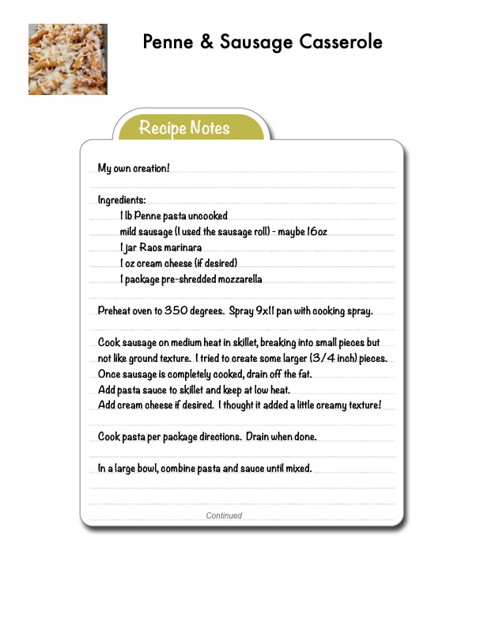

Penne & Sausage Casserole

Original cookbook page 149
My own creation! A hearty casserole with penne pasta, mild sausage, marinara sauce, and mozzarella cheese. Super good comfort food!
Prep: 20 minutes • Cook: 40 minutes • Total: 1 hour
Ingredients
- 1 lb penne pasta, uncooked
- Mild sausage (sausage roll) - maybe 16oz
- 1 jar Rao's marinara sauce
- 1 oz cream cheese (optional, for creaminess)
- 1 package pre-shredded mozzarella
- Additional mozzarella cheese for topping
Instructions
- Preheat oven to 350°F. Spray 9x11 pan with cooking spray.
- Cook sausage on medium heat in skillet, breaking into small pieces but not like ground texture. Try to create some larger (3/4 inch) pieces. Once sausage is completely cooked, drain off the fat.
- Add pasta sauce to skillet and keep at low heat.
- Add cream cheese if desired. This adds a little creamy texture!
- Cook pasta per package directions. Drain when done.
- In a large bowl, combine pasta and sauce until mixed.
- Pour mixture into prepared pan. Top with as much mozzarella as you like!
- Place pan back into oven for 20 minutes or until cheese melts.
- Serve hot and enjoy!
📝 Recipe Notes
PERSONAL NOTES: Greg thought more sauce would be good, so may try it next time with either more sauce or less pasta! This is a homemade creation that's super good! Don't break sausage too small - larger pieces (3/4 inch) work better. Combined recipe from pages 149-151.
Recipe #149 from collection